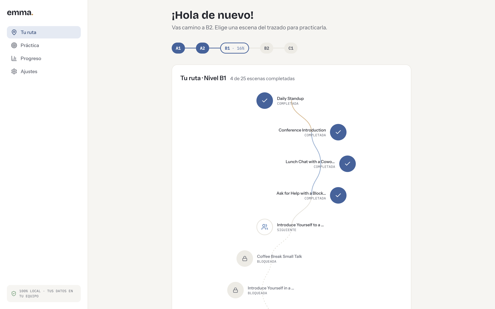
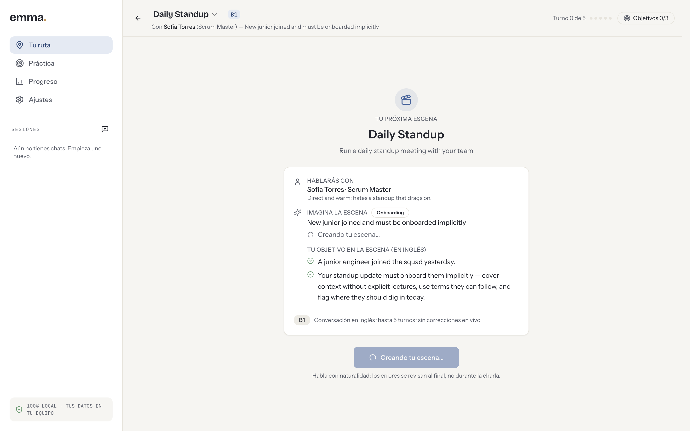
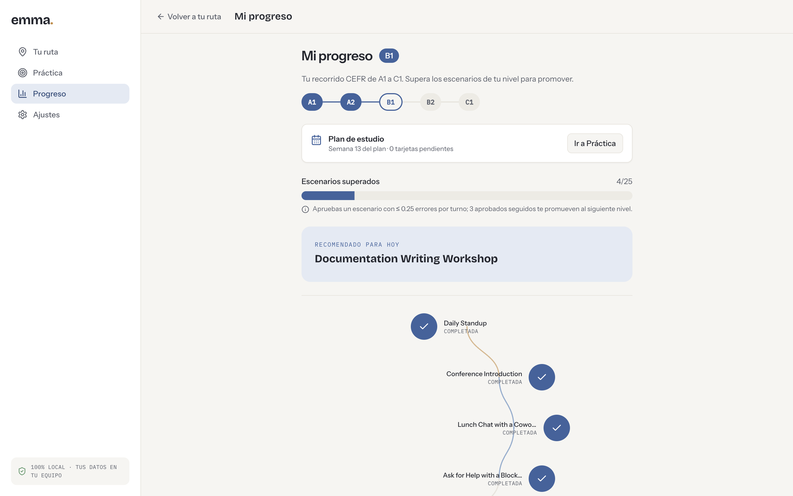
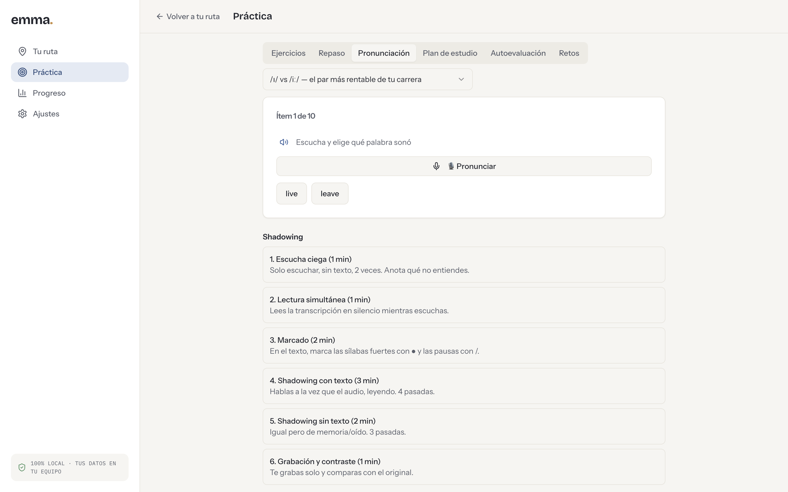
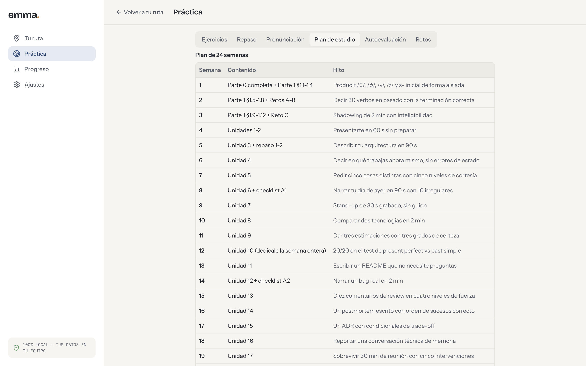
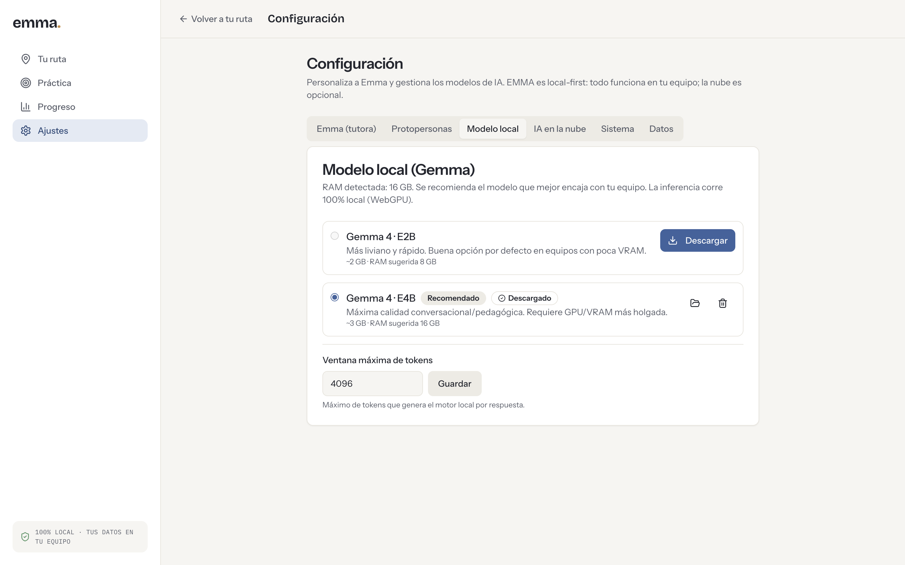
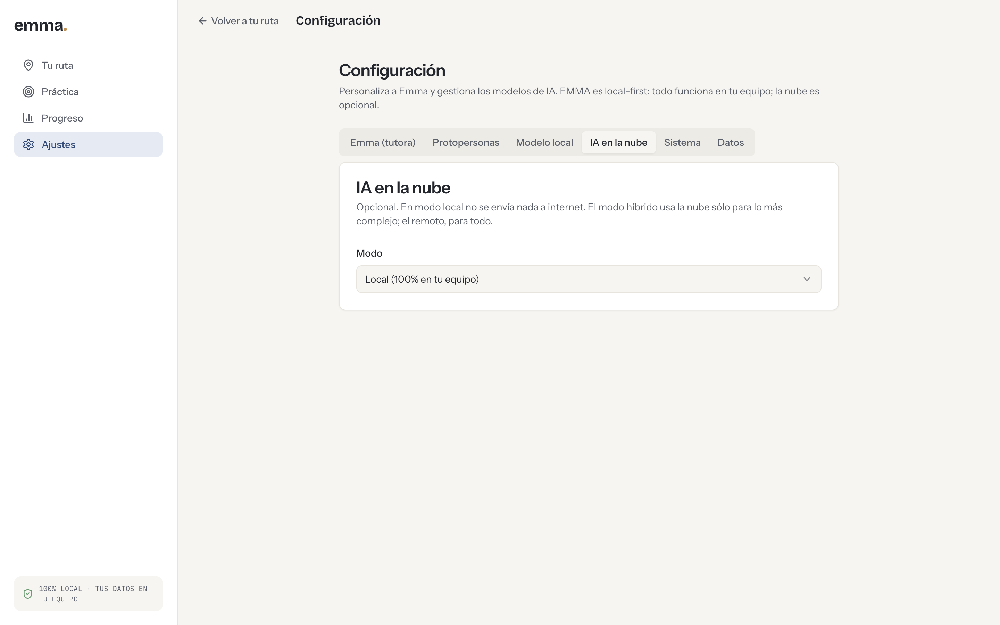

Emma te conoce charlando
El onboarding es una conversación, no un formulario: tu rol, tu stack, cuántos años llevás, qué te cuesta. Con eso arma tu ruta.
Beta pública · macOS, Windows y Linux
EMMA te pone en una escena de trabajo —una daily, un code review, una entrevista— y conversa con vos en inglés hasta que la escena se cierra. Los errores no te interrumpen: se anotan y al final te llega el reporte. La IA corre en tu equipo.
Gratis y de código abierto (Apache-2.0). Sin cuenta, sin suscripción.

“Sorry, I didn’t catch that — could you walk me through the rollback again?”
ANDAMIAJE · ES La conversación es 100 % en inglés: Emma nunca cambia de idioma. La app —botones, pistas, reportes— te habla en español. Aprendés inmersos, no traduciendo.
No hay lecciones ni videos. Hay una escena, un personaje con intención propia y una conversación que tenés que sostener.
El onboarding es una conversación, no un formulario: tu rol, tu stack, cuántos años llevás, qué te cuesta. Con eso arma tu ruta.
Un junior nuevo al que hay que poner en contexto, un incidente en producción, una entrevista. Sabés con quién hablás y qué tenés que lograr.
Los errores que se anotaron durante la charla vuelven como lección, con los ejercicios y la escena de repaso que te tocan.
Capturas de EMMA corriendo, sin retoques.
Con quién hablás, cómo es esa persona, qué está pasando y cuál es tu objetivo —en inglés—. Entrás sabiendo qué se espera de vos.
Conversación en inglés · turnos acotados · sin correcciones en vivo.
Ver la captura a tamaño completo
Recorrés escenarios de tu nivel CEFR. Aprobás uno con pocos errores por turno; tres aprobados seguidos te promueven de A1 hacia C1.
39 escenarios de trabajo, de «Daily Standup» a «Documentation Writing Workshop».
Ver la captura a tamaño completo
Pares mínimos que de verdad te cuestan (/ɪ/ vs /iː/), con audio, micrófono y una rutina de shadowing paso a paso.
Ver la captura a tamaño completo
Un plan de 24 semanas con ejercicios cerrados, repaso espaciado y autoevaluación, para los días en que no tenés cabeza para conversar.
Ver la captura a tamaño completo
EMMA detecta tu RAM y te recomienda el Gemma que encaja. Se descarga una vez y corre sobre WebGPU, en tu máquina.
Gemma 4 · E2B (~2 GB) o E4B (~3 GB) · inferencia 100 % local.
Ver la captura a tamaño completo
Practicar implica equivocarse en voz alta. Por eso EMMA es local-first: en modo local no sale un solo byte de tu equipo. Si querés más potencia, podés enchufar un modelo de nube —y sos vos quien lo decide, por ajuste.

Tus errores se capturan mientras hablás y vuelven al final como reporte, no como interrupción.
Emma habla y resalta la palabra que está diciendo; vos podés responder dictando en vez de escribir.
Sugerencias de respuesta graduadas por dificultad, autocompletado y traducción bajo demanda.
Lo que fallaste vuelve a aparecer cuando toca, con tarjetas y retos ligados a cada unidad.
Tono, actitud, estilo de voz y nivel de detalle de la tutora; y protopersonas para los personajes de cada escena.
Retoma donde quedaste: recuerda la escena, el turno y lo que estabas practicando.
Los instaladores de las tres plataformas viven en la página de releases del proyecto.
Imagen .dmg para Apple Silicon.
Ir a la descargaInstalador .exe de 64 bits.
Ir a la descargaAppImage portable.
Ir a la descarga
Al abrirla por primera vez, EMMA descarga el modelo local (entre 2 y 3 GB). Necesitás una
GPU con WebGPU y unos 8 GB de RAM para el modelo liviano, 16 GB para el recomendado.
Todavía no hay certificado de desarrollador, así que la primera apertura pide un permiso
extra: en macOS, clic derecho sobre la app y «Abrir»; en Windows, «Más información» y
«Ejecutar de todas formas»; en Linux, chmod +x sobre el AppImage.
Es una beta: si algo se rompe, contalo en los
issues del repositorio.
{kind=link}
{kind=link}
{kind=link}
{kind=link}
{kind=link}
{kind=link}